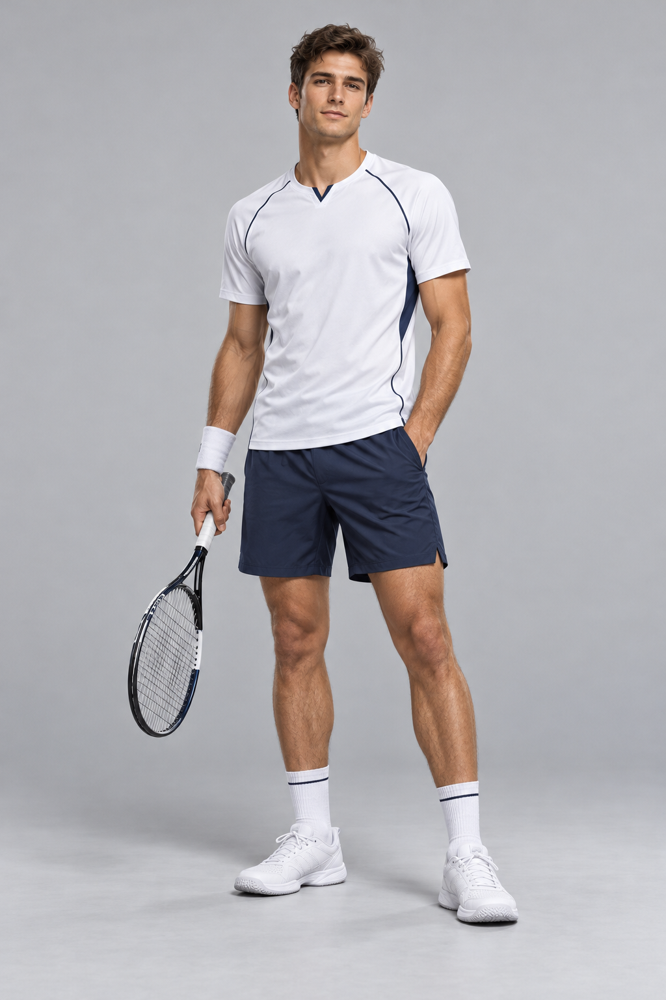
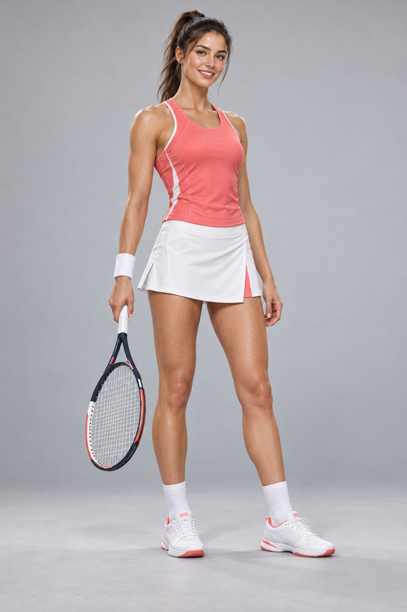

移動は任せても、自分で動いても。あなたの選手で、一球に集中しよう。


自動移動なら、打球に集中。手動移動なら、自分でボールを追いかけよう。
スマホ：左のスティックで移動、右のボタンで打球。左・中・右でコース、深め・浅めで奥行きを選べます。移動中も同時に打てます。サーブを打つまではサーバーの移動を固定します。
得点は 0 → 15 → 30 → 40。デュースからは2点差でゲーム獲得。6ゲーム以上かつ2ゲーム差で勝利。6–6は7点以上・2点差のタイブレーク。サーブはサービスボックス内へ。2回のフォルトで失点します。
試合は一時停止中です。
進行中のスコアはリセットされます。